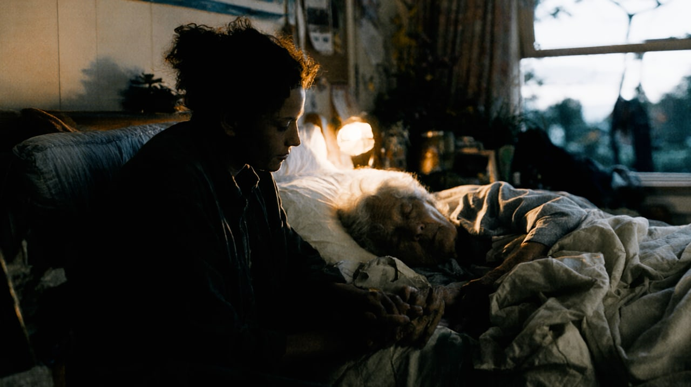
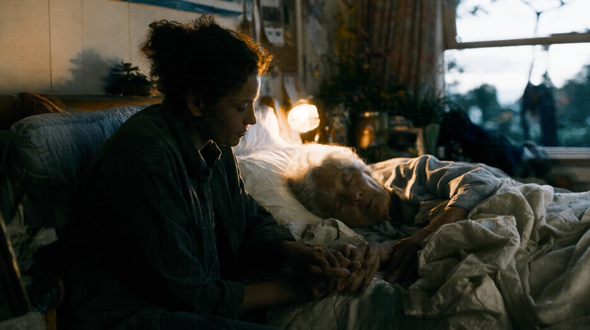
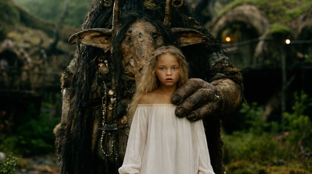
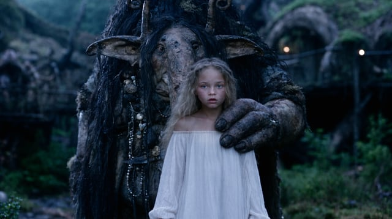
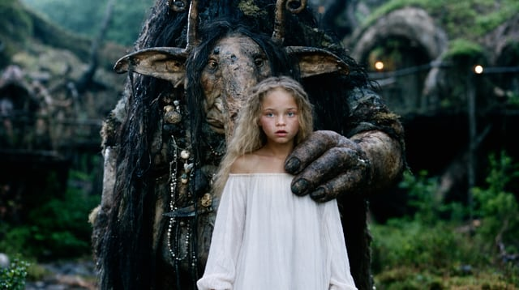
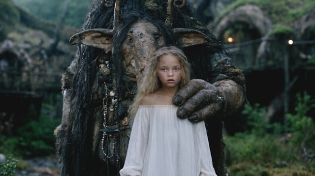
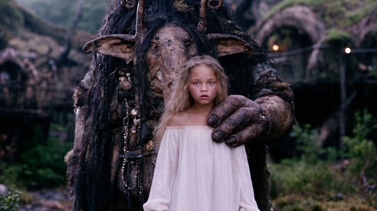

Colour grading for film, video and AI imagery
Nyans reads your shot and composes ten finished looks for it in seconds, on modelled print film or in clean digital, from soft and warm to hard and cold. Each one is solved on your image, so the blacks hold, the highlights hold and skin stays skin.
Free for 7 days, then €59 once. No subscription.
One press of Generate on one frame, exactly as Nyans rendered it
A preset doesn't know your shot. It puts the same numbers on every frame, wherever your blacks sit, however hot your highlights run, wherever the faces are. So it crushes, clips and casts, and the session goes into undoing it. Nyans starts from the frame.
How it works
A still or a clip: camera log, Rec.709, phone footage or AI-generated. Inside Premiere Pro, DaVinci Resolve or Final Cut Pro, Nyans reads the frame under your playhead.
Ten looks, each from a different family, composed for that exact frame. Press again and you get ten new ones. No two presses are alike.
Trim the look the way a colourist would, then export a .cube LUT, a full-resolution still or the graded clip, or apply it to the clip in your timeline in one press.
One press
This is a single press of Generate on one frame. Every look was composed for it, for its exposure, its black and white and its skin, and each one comes from a different family. They carry the names Nyans gives them: C is contrast, S is saturation, then the hue of the tint in the shadows and in the highlights, N where they stay neutral.
Before and after
On the left, the source. On the right, C1.03 S115 on modelled print film, composed by Nyans for this shot.
Why Nyans
Every look is built from your frame: its key, its black and white, the colour of its neutrals, where the skin is. Nothing is pasted on top of it.
Black and white are set from the frame's own levels, so detail that was there stays there. Skin is held inside healthy skin tones in every look.
Negatives and print film are built from published characteristic data: spectral sensitivities, curves and dye densities. Every print is timed to grey, the way a lab times it.
The viewer runs the same 65-point LUT you export, baked from the same code. No surprises when it lands in Resolve or Premiere.
Nyans runs on your device. Frames are never uploaded, so there is no queue and no waiting on a server.
Every look you keep teaches it, on your device. Your next press leans your way.
Presets and LUT packs
The same transform on every shot, whatever its exposure.
Ten new looks, solved for this shot.
Reference matching
Copies a look you already have.
Looks you haven't seen yet. No reference needed.
Cloud AI graders
Upload your footage, then wait.
Everything happens on your device, in seconds.
Film emulation plugins
A stock, and the grade is still yours to build.
The print and the grade, composed together.
Refine
Every look opens with a full set of trims: Amount up to 200%, exposure, contrast, warmth, tint, saturation, shadows, highlights, whites, blacks, density and skin hold. Exposure, colour, shadows and highlights are trimmed inside the grade, before the print, the way a colourist works, so a correction never fights the look.


Shadows brings back what a look pressed into black. Her face, her sweater and her hands return, and the black stays black.
Ask for variations of any look and you get a new batch of alternatives, each one clear move: warmer, cooler, more contrast, softer, richer, lighter, darker. Each is labelled, so you know what you are comparing.





Workflow
Nyans runs in the browser on a Mac, PC, tablet or phone, with nothing to install. In Premiere Pro and DaVinci Resolve it works as a panel, and in Final Cut Pro as an effect: it reads the frame under the playhead and puts the look on your clip, in one press in Resolve and Final Cut Pro, and in Premiere Pro with one pick in Lumetri Color.
Plugins
The same Nyans, as a panel in Premiere Pro and DaVinci Resolve Studio and as an effect in Final Cut Pro. It reads the frame under your playhead and puts the look on your clips, and your editor renders it itself, in real time and in the final export.
2025 (25.6) or later, on a Mac or a PC. Adds Lumetri Color to the selected clips and copies the look’s LUT, ready to pick under Look.
Version 18 or later, on a Mac or a PC. Puts the look on a node of the clip, its colour group or the whole timeline.
10.6 or later, on macOS 13 Ventura or later. The look is stored in the clip, so it travels with the library and renders in every export.
One licence
€59once, no subscription
On a phone or tablet? The plugins are for your computer. Nyans itself runs right here: open it in your browser.
One download for Mac and PC, 1.9 MB, with an installer for each editor. Start with Read me first. Checksum
After 7 days Nyans still composes and shows looks, and every look you applied stays on your clips, but exporting and applying looks need a licence. Your key arrives by e-mail the moment you buy: paste it into Nyans once in each editor and browser you use. Nyans checks it online once, then works offline.
The installers are not signed by Apple yet. On a Mac, right-click one and choose Open the first time; if macOS still refuses, click Open Anyway in System Settings › Privacy & Security.
The price includes VAT. Checkout is by Lemon Squeezy, our reseller: card, PayPal, Apple Pay or Google Pay. Not for you? Write within 14 days for a full refund. Terms · Privacy
Rather not install anything? Open Nyans in your browser: the same 7-day trial, and the same licence unlocks it.
Runs in your browser. Free for 7 days.
Or get the plugins for Premiere Pro, Resolve and Final Cut Pro